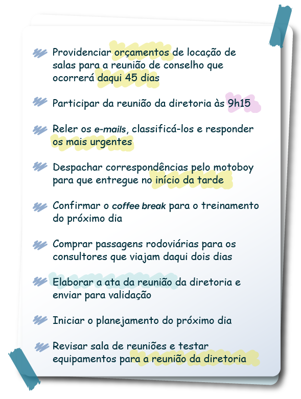
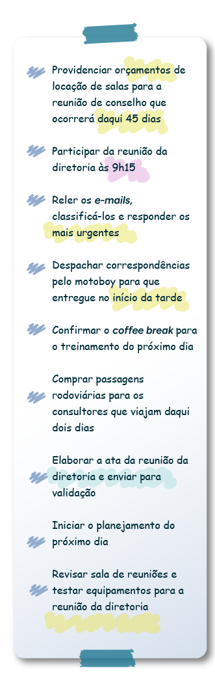

Atualização e organização de agenda: critérios para agendamento de compromisso e de contatos, controle de espaços, agendas física e virtual
O profissional técnico em secretariado tem como rotina organizar o escritório, a estação de trabalho onde atua (em alguns momentos, pode ser preciso organizar outros espaços, como locais de reuniões e eventos), documentos, papéis diversos, as áreas de trabalho virtuais e as agendas – o cuidado com a agenda, seja física, seja virtual, é imprescindível para um adequado andamento das atividades do profissional da área.
Contudo, organizar uma agenda não é uma tarefa fácil. Apesar de parecer simples, organizar compromissos, sempre com o objetivo de respeitar os prazos e as possibilidades de organização do tempo, é uma tarefa complexa. Portanto, para executar tal demanda eficientemente, é importante conhecer alguns critérios, os quais auxiliarão no desenvolvimento da tarefa.
Lembre-se de que, para organizar as agendas, você depende da colaboração de outros profissionais. Por isso, cultive a comunicação organizacional. Quanto mais eficiente ela for, mais facilidade você terá em cumprir os compromissos conforme a necessidade estabelecida para a lista de demandas.
Você atua como assistente de um dos de uma grande empresa de alimentos. A agenda do executivo sofre modificações a todo momento, pois ele é solicitado para reuniões nacionais, internacionais e internas inúmeras vezes ao longo dos meses. As reuniões, na maioria das vezes, são agendadas com antecedência, mas muitas acontecem de forma extraordinária, ou seja, em caráter emergencial. Portanto, a agenda não é fixa. Novos compromissos precisam ser inseridos ao longo do mês, em conjunto com datas e horários já agendados. O secretário do executivo, com base nos fatos mencionados, solicita constantemente que você confirme datas, horários, locais e possibilidades de remarcação de compromissos.
Essa complexa tarefa é apenas uma das que você enfrenta – e enfrentará – em sua rotina de trabalho. Portanto, pare e pense: que estratégias você pode utilizar para facilitar a organização das agendas?
Agendamento de compromissos e de contatos: critérios
Para agendar de forma eficaz e correta os compromissos e os contatos, você precisa considerar algumas práticas.
Primeiramente, antes de responder positivamente a qualquer tipo de agendamento de compromisso, verifique a disponibilidade dos envolvidos. Caso você esteja, por exemplo, agendando um compromisso para um gestor, certifique-se sobre a disponibilidade dele. Muitas vezes, os gestores confirmam datas e horários sem informar o profissional de secretariado, o que pode gerar conflitos de agendamento. Observe o exemplo a seguir:
Fonte: Senac EAD (2024)
A imagem mostra as mãos de um homem, uma tela de computador e uma agenda aberta na tela do computador com as seguintes informações: dia dezessete sublinhado, sinalizando o horário das 14h às 16h, no qual deve ocorrer a reunião de planejamento com o setor financeiro, e o horário das 15h30, no qual deve ocorrer a reunião de gerentes.
Júlio é técnico em secretariado e atua como assistente da secretária da diretora de uma empresa familiar. Uma das funções de Júlio é se reunir com a secretária, todos os dias, na primeira hora da manhã, para repassar os compromissos da diretora. A secretária faz a lista dos compromissos do dia para, então, repassar à diretora assim que esta chegar à empresa. Em determinado dia, ao conferir os compromissos, Júlio verificou que havia dois compromissos conflitantes:
Como você resolveria essa situação? E, ainda, como você deve proceder para que conflitos de horários não ocorram?
Para minimizar situações como a citada anteriormente, siga algumas dicas:
Clique ou toque para visualizar o conteúdo.
Confirme sempre com os profissionais líderes a presença deles nos eventos futuros. Antes de aceitar qualquer compromisso, comunique aos envolvidos e verifique a disponibilidade de todos. No exemplo de Júlio, a situação poderia ter sido evitada se os horários dos compromissos fossem confirmados. As agendas virtuais indicam conflito de compromissos. Agora, se os agendamentos são feitos manualmente em agendas físicas, deve-se ter o dobro de cuidado. Portanto, sempre que for agendar um compromisso, verifique a faixa de horário que ele ocupará. Inclua, inclusive, no mínimo 15 minutos de intervalo entre os eventos. Assim, caso ocorra algum atraso, as chances de problema são reduzidas.
Apure o tempo de duração dos compromissos, pois você pode aceitar agendas conflitantes. Deixe uma margem de tempo entre os eventos, pois, caso ocorram atrasos, você evitará conflito de compromissos.
Programe intervalos de no mínimo 15 minutos entre os agendamentos. Assim, você pode repassar informações para o seu líder. É fundamental, portanto, verificar a agenda (ou as agendas, caso você trabalhe em contextos com mais de um profissional) logo que você chegar ao seu espaço de trabalho. Liste as tarefas e repasse-as ao responsável. Lembre-se de que você também deve verificar as suas tarefas do dia. Então, são duas listas: uma das suas tarefas e outra das tarefas do seu gestor.
Ao chegar ao fim da jornada de trabalho, é importante organizar o próximo dia de atividades, pois você pode ter responsabilidades logo no primeiro horário da manhã. Quanto mais você controlar as demandas, menos são as chances de erro na gestão dos compromissos.
E você, como organiza sua agenda?
Além da agenda dos gestores, você também deve ter extremo cuidado com a organização da sua agenda, pois suas atividades poderão impactar alguma demanda da pessoa que você assessora. Além disso, também é fundamental manter a organização para que as atividades fluam de forma mais harmônica durante o dia.
A rotina de um profissional de secretariado pode ser desafiadora. Você pode estar com todo o seu dia programado, mas imprevistos poderão surgir. Então, é necessário ter atenção no momento de organizar o seu dia. Geralmente, aproveita-se o fim do expediente de trabalho para planejar o próximo dia, organizando as tarefas que serão realizadas, listando-as por ordem de prioridade.
É importante ressaltar que, ao ordenar suas atividades de forma satisfatória, é bem provável que você consiga realizar as atividades mais urgentes do dia. Isso porque não se deve deixar as atividades urgentes para o dia seguinte, caso não seja viável finalizar todas as demandas durante o expediente.
É fundamental ter ciência de que nem sempre será possível concluir todas as tarefas planejadas, pois você também deve respeitar seu horário de trabalho.
Então, para essas questões, é importante conhecer as atividades que o profissional de secretariado desempenha e entender cada etapa delas.
Como você faria se estivesse com a agenda cheia no dia, mas precisasse remarcar algum voo, por exemplo?
Para isso, é importante entender um pouco sobre as regras de viagens aéreas. Na prática, você entenderá que, se for preciso antecipar um voo para o mesmo dia, você deverá fazer isso com a maior rapidez possível. Se o seu gestor quiser antecipar um voo, você priorizará essa demanda. É importante saber que quanto mais próximo o horário de embarque do voo, maior é a chance de não conseguir um assento disponível. Portanto, é fundamental ter cuidado com algumas atividades que devem ser prioridade.
Se você precisa elaborar um documento, por exemplo, você deve estimar um tempo para realizar a organização das informações, a redação e a revisão do documento. Caso precise enviá-lo para alguém, também considere o tempo de redigir um e-mail para fazer o envio do documento. Consegue perceber a importância de considerar o tempo de desenvolvimento de cada atividade?
Uma outra questão bem recorrente na rotina do profissional de secretariado são as ligações telefônicas. Sim, você pode estar no meio da redação de um documento e precisar atender ao telefone. Dessa forma, a conclusão do documento já demorará um pouco mais que o previsto.
Para que você, futuro profissional de secretariado, não desorganize sua rotina, é essencial considerar essas informações. Entenda cada atividade desempenhada e analise o tempo que leva para desenvolvê-las. Assim, você terá mais segurança quando houver algum imprevisto, não é mesmo?
Faça um teste no gerenciamento de sua agenda.
Imagine o seguinte cenário:
Você chegou cedo ao trabalho e revisou seu planejamento do dia, verificando que tem diversas tarefas. Contudo, no dia anterior, você apenas listou as demandas em um bloco e não as organizou dentro da agenda com os horários adequados.
As suas anotações estão assim:
 - Providenciar orçamentos de locação de salas para a reunião de conselho que ocorrerá daqui 45 dias
- Participar da reunião da diretoria às 9h15
- Reler os e-mails, classificá-los e responder os mais urgentes
- Despachar correspondências pelo motoboy para que entregue no início da tarde
- Confirmar o coffee break para o treinamento do próximo dia
- Comprar passagens rodoviárias para os consultores que viajam daqui dois dias
- Elaborar a ata da reunião da diretoria e enviar para validação
- Iniciar o planejamento do próximo dia
- Revisar sala de reuniões e testar equipamentos para a reunião da diretoria
Além das demandas listadas, você precisa fazer seu horário de almoço, que é das 12h às 13h15.
Então, como você organizaria sua agenda dentro dos horários?
Observe a seguinte agenda e os compromissos listados e arraste para o horário que você acredita ser o mais adequado para cada demanda.


Controle de espaço
Para um ambiente produtivo, é fundamental controlar o espaço. Você pode aplicar o controle de espaço na disposição dos móveis, nos documentos na estação de trabalho, nas pastas de arquivos, nos materiais de escritório etc.
A atuação do profissional de secretariado é muito relacionada com a organização, por isso, quando há poucas salas de reuniões em uma empresa, o profissional de secretariado pode ficar responsável pelo controle do agendamento desses espaços. Nesse caso, pode usar uma planilha para fazer esses registros. Contudo, é importante observar que existem sistemas de agendamento, nos quais o responsável pela reunião faz diretamente o registro no sistema e o profissional de secretariado não precisa ficar com essa responsabilidade.
Agora, no processo de controle da agenda e dos contatos, você deve considerar o uso do espaço para registrar as informações. Observe as duas situações:
Agenda 1
22 (segunda-feira)
6h –
7h – Alinhamento do dia com secretário
8h – Reunião com fornecedor (8h a 10h)
9h –
10h – Reunião com gerentes
11h –
12h – Almoço com Jairo Almoço com gerentes
13h –
14h - Reunião até 17h
15h –
16h –
17h – Alinhamento com gerente financeiro
18h – Viagem para filial 2
19h –
20h –
21h –
22h –
23h –
Agenda 2
22 (segunda-feira)
6h – Urgente: cancelar almoço com Jairo o mais cedo possível.
7h-7h30 – Alinhamento do dia com secretário (repassar agenda do dia)
Forma
Forma8h – Reunião com fornecedor (sala 2)
9h –
Forma10h –
Forma10h30 - Reunião com gerentes (auditório)
11h –
12h - Almoço com gerentes (restaurante Solarium)
13h –
13h30 – Continuação da reunião com gerentes
14h –
15h –
16h –
17h - Término da reunião
18h – Viagem para filial 2 (saída agendada para 18h30). Verificar documentos necessários com a gestora.
18h30 – Viagem para filial 2.
19h –
20h –
21h – Previsão de chegada ao hotel (Novotel – Avenida das Nações, 822)
22h –
23h –
Observações:
*Agendar viagem para filial 1 no dia 28.
*Agendar visita técnica para o dia seguinte (23) e verificar disponibilidade da gerente para 14h (duração até 17h).
Controlar o espaço da agenda também pode ser uma das tarefas do profissional técnico em secretariado. Você conseguiu identificar a diferença entre os dois exemplos anteriores?
A agenda 1 exemplifica uma organização do espaço e do tempo não indicada. Há muitas informações que estão sobrepostas e outras que são desnecessárias. O excesso de informação dificulta gerir os compromissos. Já na agenda 2, as informações estão mais completas. Os eventos cancelados não ocupam espaço, e o tempo de duração dos compromissos está destacado. Assim, foram reduzidas as chances de os eventos se sobreporem.
Observe que entre as agendas 1 e 2 há uma diferença inclusive no intervalo entre os compromissos. É importante verificar o tempo de finalização de um evento e o início de outro. Caso seja necessário algum deslocamento, mesmo que entre salas, em uma mesma empresa, programe pelo menos alguns minutos para movimentação.
Lembre-se de que o arranjo agradável dos móveis, dos documentos e da agenda transmite uma ideia de organização, alinhamento, dedicação, além de possibilitar um fluxo mais adequado das tarefas.
Conforme destacam Medeiros e Hernandes (2010, p. 289), ambientes não acolhedores provocam sensações desestimulantes para o trabalho e influenciam o rendimento. Portanto, alguns cuidados são essenciais, tais como: guardar o que não está sendo utilizado; eliminar compromissos desmarcados; providenciar os materiais necessários para todas as atividades; cuidar do arejamento das salas; e monitorar o registro dos eventos e dos compromissos com a ajuda da agenda.
Clique ou toque para visualizar o conteúdo.
Novas tecnologias para ajudar na atualização e na organização de agenda
As novas tecnologias da informação modificam-se rapidamente, sempre com o propósito de facilitar, acelerar, maximizar e integrar recursos. Elas são ferramentas desenvolvidas para solucionar problemas tradicionais de forma moderna.
Imagine que você, como profissional técnico em secretariado, atua em uma empresa multinacional assessorando três secretários executivos da diretoria (indiretamente, você lida com um fluxo de informações que envolve seis profissionais – sete, caso você inclua a sua agenda).
Agora, pense na movimentação de registro, marcação, remarcação e cancelamento de datas, horários, eventos, compromissos, recepções etc. Com o registro físico de sete agendas diferentes, as quais, muitas vezes, precisam estar integradas, o cuidado deve ser redobrado. É preciso ter atenção para não sobrepor compromissos ou mesmo esquecer agendamentos.
As novas tecnologias emergem para auxiliar na atualização e na organização de agenda e contatos. Antigamente, utilizava-se a agenda física de contatos (muitos ainda a utilizam), por exemplo. Hoje em dia, prioriza-se o registro virtual para acelerar e manter as informações mais seguras.
Ao manter apenas o registro escrito dos contatos, corre-se o risco de algum imprevisto acontecer (por exemplo, os contatos serem perdidos). Com as novas tecnologias, é possível salvar os registros “na nuvem”, ou seja, em discos rígidos (os conhecidos HDs) localizados para além dos HDs pessoais, maximizando o armazenamento de informações.
O importante é considerar as opções e selecionar aquela que for mais adequada a cada ambiente de trabalho. Isso não significa que agendas físicas estão obsoletas e não devem ser utilizadas. Ao contrário, elas representam uma ferramenta importante que ainda é muito utilizada pelos profissionais. O ideal é avaliar cada situação e encontrar as estratégias mais produtivas para conduzir as atividades.
Por fim, como exemplo de ferramenta da informação que surge para auxiliar os profissionais no registro eficiente e compartilhado das informações, tem-se o Trello.
Fonte: Blog da UNASP (2018)
A imagem mostra três diferentes telas: celular, monitor e tablet. Nas três telas, há exemplos de uso da ferramenta Trello, ou seja, diferentes quadrantes organizando diferentes tarefas compartilhadas.
O Trello é a ferramenta ideal para atividades desenvolvidas de forma compartilhada. Com ele, você pode criar diferentes quadros, no estilo de post-its (cartões coloridos ou personalizados), para cada tipo de tarefa e convidar as pessoas envolvidas no projeto/evento. Além disso, ele tem uma aplicação mais adequada para empresas modernas. Empresas mais tradicionais podem exigir a utilização de ferramentas, mesmo modernas, que tenham uma apresentação mais formal e tradicional.
Sempre considere, em sua trajetória profissional, o contexto e as escolhas sugeridas. Isso serve tanto para novas tecnologias quanto para apresentação pessoal, comunicação, postura etc.
Portanto, conforme destacam Kubica e Carvalho (2014, p. 93), para cumprir uma tarefa ou auxiliar no desenvolvimento de um projeto, é importante planejar e organizar as etapas, com registro do processo de execução. Para o autor, reforçando a importância da manutenção da agenda, seja física, seja virtual, uma forma simples de organizar as tarefas é anotar tudo que tem de ser feito exatamente em uma agenda.
Para facilitar o processo e assegurar o registro das informações, descreva todas as tarefas (Kubica; Carvalho, 2014, p. 93) que precisam ser realizadas ao longo do tempo (dia, semana, mês, semestre, ano etc.) e, em seguida, coloque-as em uma lista de prioridades. Conforme for concluindo as demandas, sinalize e prossiga organizando melhor as tarefas e otimizando o tempo.